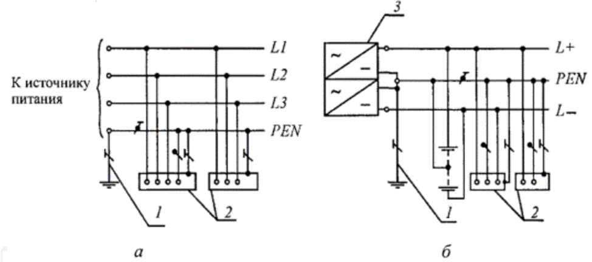
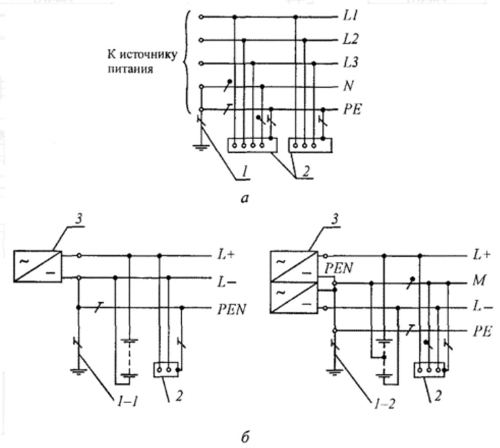
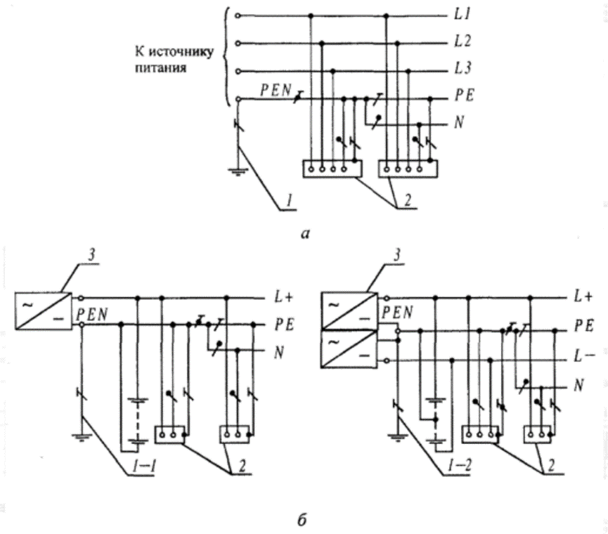
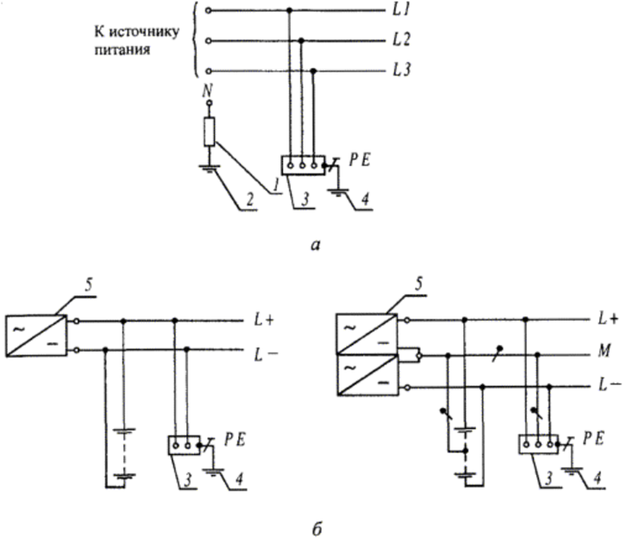
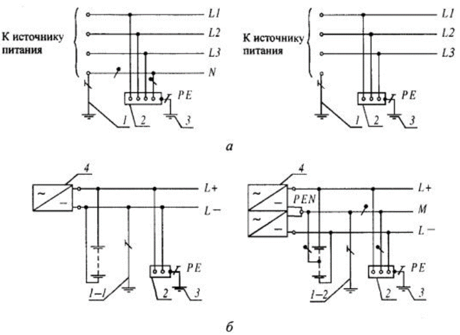

Требования пожарной безопасности и заземления

Проектирование внутренних систем электроосвещения, силового оборудования и розеточных сетей представляет собой комплексную задачу, выходящую за рамки простых расчетов нагрузок и компоновки схем. Первостепенное значение имеет создание безопасной электроустановки, исключающей риски возникновения пожара и угрозу для жизни людей.
Системы пожарной безопасности ЭОМ и правильно организованное заземление совместно предотвращают две основные угрозы: возникновение пожара вследствие замыкания и поражение человека электрическим током.
Два фундаментальных аспекта безопасности:
- Пожарная безопасность – это комплекс мер, направленных на предотвращение условий для возникновения и распространения пожара из-за неисправностей в электропроводке и электрооборудовании.
- Электробезопасность – это меры по защите людей от поражения электрическим током, а оборудования – от повреждений, что также исключает развитие аварийных ситуаций, способных привести к возгоранию.
Пренебрежение требованиями электро- и пожарной безопасности влечет за собой серьезные риски: человеческие жертвы, значительный материальный ущерб, юридическую ответственность проектировщика и неизбежный отказ в согласовании проекта.
Следовательно, главный принцип проектирования формулируется следующим образом: каждое ваше проектное решение по сетям ЭОМ должно содержать четкие ответы на два вопроса:
- Каким образом данное решение исключает возможность возгорания
- Как оно обеспечивает защиту людей и оборудования в случае неисправности
Нормативная база проектирования
Работа проектировщика ведется в строгих рамках нормативных документов, знание которых является обязательным профессиональным требованием. Базовыми документами, регулирующими вопросы пожарной и электробезопасности, являются:
- Федеральный закон № 123-ФЗ «Технический регламент о требованиях пожарной безопасности». Это основной документ, устанавливающий фундаментальные требования к пожарной безопасности, в том числе электрических установок.
- Правила устройства электроустановок (ПУЭ). Основополагающий документ, который содержит детальные технические требования ко всем аспектам проектирования, монтажа и эксплуатации электроустановок.
- Свод правил СП 256.1325800.2016 «Электроустановки жилых и общественных зданий. Правила проектирования и монтажа». Этот документ положения применительно к зданиям различного назначения.
Теперь перейдем к рассмотрению практических требований. Начнем с ключевого элемента – системы заземления.
Системы заземления электроустановок зданий
Заземление – это преднамеренное электрическое соединение какой-либо точки сети, электроустановки или оборудования с заземляющим устройством. Его основная цель, как того требуют ПУЭ, - обеспечить безопасность. Токоведущие части не должны быть доступны для случайного прикосновения, а доступные проводящие части (корпуса оборудования) не должны находиться под опасным потенциалом ни в нормальном режиме, ни при повреждении изоляции.
Заземление обеспечивает отвод опасных токов в землю. ПУЭ, п. 1.7.100 требует TN-C-S для новых зданий (разделение PEN на PE/N).
Для понимания принципов проектирования необходимо разобраться в типах систем заземления. Обозначения систем стандартизированы.
Первая буква характеризует состояние нейтрали источника питания относительно земли:
Т - заземленная нейтраль;
I - изолированная нейтраль.
А вторая буква - состояние открытых проводящих частей электроустановки относительно земли:
Т - открытые проводящие части заземлены непосредственно, независимо от связи с нейтралью источника;
N - открытые проводящие части присоединены к глухозаземленной нейтрали источника питания.
Последующие буквы (после N) - определяют устройство нулевого рабочего (N) и защитного (PE) проводников:
S - нулевой рабочий (N) и нулевой защитный (РЕ) проводники разделены на всём протяжении системы.
C - функции нулевого рабочего и нулевого защитного проводников совмещены в одном проводнике (PEN).
Рассмотрим основные системы, применяемые в зданиях:
- Система TN-С – это устаревшая система TN, в которой нулевой защитный и нулевой рабочий проводники совмещены в одном проводнике на всем её протяжении. Не обеспечивает необходимого уровня безопасности при обрыве PEN-проводника и не соответствует современным требованиям для большинства объектов. На рисунке а система переменного тока, б – постоянного тока.

- Система TN-S – это современная и наиболее безопасная система. Нулевой защитный и нулевой рабочий проводники разделены на всем её протяжении. Это исключает появление опасного потенциала на корпусах оборудования при обрыве нулевого рабочего проводника. На рисунке а - система переменного и б - постоянного тока.

- Система TN-C-S – это система TN, в которой функции нулевого защитного и нулевого рабочего проводников совмещены в одном проводнике в какой-то ее части (например, от трансформаторной подстанции до вводного устройства здания), начиная от источника питания. На рисунке а - система переменного и б - постоянного тока;

- Система IT – это система, в которой нейтраль источника питания изолирована от земли или заземлена через приборы или устройства, имеющие большое сопротивление, а открытые проводящие части электроустановки заземлены. Применяется на объектах с особыми требованиями к бесперебойности электроснабжения (например, в медицинских учреждениях для операционных). На рисунке а - система переменного и б - постоянного тока;

- Система ТТ – это система, в которой нейтраль источника питания глухо заземлена, а открытые проводящие части электроустановки заземлены при помощи заземляющего устройства, электрически независимого от глухозаземленной нейтрали источника. Такая система часто применяется в частных домах, временных сооружениях или когда состояние сети не позволяет выполнить требования систем TN. На рисунке а - система переменного и б - постоянного тока;

Проектирование заземляющих устройств
Для заземления используют искусственные или естественные заземления. Для защиты от поражения электрическим током при косвенном прикосновении в таких электроустановках должно быть выполнено автоматическое отключение питания.
В качестве естественных заземлителей могут быть использованы:
- металлические и железобетонные конструкции зданий и сооружений, находящиеся в соприкосновении с землей, в том числе железобетонные фундаменты зданий и сооружений, имеющие защитные гидроизоляционные покрытия в неагрессивных, слабоагрессивных и среднеагрессивных средах;
- металлические трубы водопровода, проложенные в земле;
- обсадные трубы буровых скважин;
- металлические шпунты гидротехнических сооружений, водоводы, закладные части затворов и т.п.;
- рельсовые пути магистральных неэлектрифицированных железных дорог и подъездные пути при наличии преднамеренного устройства перемычек между рельсами;
- другие находящиеся в земле металлические конструкции и сооружения;
- металлические оболочки бронированных кабелей, проложенных в земле. Оболочки кабелей могут служить единственными заземлителями при количестве кабелей не менее двух. Алюминиевые оболочки кабелей использовать в качестве заземлителей не допускается.
Не допускается использовать в качестве заземлителей трубопроводы горючих жидкостей, горючих или взрывоопасных газов и смесей, и трубопроводов канализации, и центрального отопления, а также железобетонные конструкции зданий и сооружений с предварительно напряженной арматурой.
Для защиты от поражения электрическим током в случае повреждения изоляции должны быть применены по отдельности или в сочетании следующие меры защиты при косвенном прикосновении:
- защитное заземление;
- автоматическое отключение питания;
- уравнивание потенциалов;
- выравнивание потенциалов;
- двойная или усиленная изоляция;
- сверхнизкое (малое) напряжение;
- защитное электрическое разделение цепей;
- изолирующие (непроводящие) помещения, зоны, площадки.
При применении системы TN рекомендуется выполнять повторное заземление РЕ- и PEN-проводников на вводе в электроустановки зданий, а также в других доступных местах. Для повторного заземления в первую очередь следует использовать естественные заземлители. Сопротивление заземлителя повторного заземления не нормируется.
Система уравнивания потенциалов
Чтобы понять, зачем необходимо уравнивание потенциалов, рассмотрим бытовую ситуацию. Представьте, что в ванной комнате человек одной рукой касается металлической водопроводной трубы, а другой - корпуса стиральной машины. В нормальном состоянии оба предмета безопасны. Однако при повреждении изоляции в электропроводке здания или при «заносе» высокого потенциала по внешним коммуникациям (например, при ударе молнии или аварии в сетях) на одном из этих объектов может появиться опасное напряжение. Если в этот момент между трубой и корпусом машины возникнет значительная разность потенциалов, через тело человека потечет электрический ток, что может привести к электротравме.
Система уравнивания потенциалов (СУП) – это комплекс мер, направленных на устранение такой опасной разности потенциалов между проводящими частями, доступными для одновременного прикосновения. Её основная задача - создать в здании эквипотенциальную среду, где все металлические предметы, не являющиеся частью электрической цепи, имеют одинаковый или близкий электрический потенциал.
Для обеспечения полной защиты в здании организуется два уровня СУП: основная и дополнительная. Эти системы работают совместно, обеспечивая безопасность как в масштабах всего сооружения, так и в отдельных помещениях с повышенной опасностью.
Основная система уравнивания потенциалов (ОСУП)
ОСУП – это фундаментальная мера электробезопасности для всего здания, цель которой – объединить в единую электрически связанную сеть все значимые проводящие элементы конструкции и инженерных систем, которые в нормальных условиях не находятся под напряжением.
Перечень элементов, подлежащих подключению к ОСУП, строго регламентирован ПУЭ (п. 1.7.82). В него входят:
- Главный защитный (PE) и заземляющий (G) проводники.
- Металлические трубы всех коммуникаций, входящих в здание: холодного и горячего водоснабжения, канализации, отопления, газоснабжения (если это допустимо по правилам для газа).
- Металлические части строительных конструкций (арматура, каркасы).
- Элементы системы молниезащиты.
- Металлические короба и лотки систем вентиляции и кондиционирования.
- Защитные оболочки телекоммуникационных кабелей.
Принцип работы ОСУП основан на соединении всех перечисленных элементов индивидуальными проводниками с общим узлом - главной заземляющей шиной (ГЗШ). Если на какой-либо из подключенных элементов (например, на водопроводную трубу из-за аварии в подземной сети) попадает опасное напряжение, оно мгновенно «растекается» по всей связанной системе. В результате между любыми двумя точками, которых может коснуться человек, не возникает опасной для жизни разности потенциалов.
Ключевые требования к проектированию ОСУП:
- Индивидуальное подключение: Каждый элемент должен соединяться с ГЗШ своим проводником. Последовательное соединение элементов (например, от трубы к трубе) недопустимо, так как при повреждении такого проводника целая группа элементов окажется незащищенной.
- Сечение проводников: Минимальное сечение медного проводника уравнивания потенциалов должно составлять не менее 6 мм² для медных, для алюминиевых - 16 мм2, для стальных - 50 мм2 (ПУЭ, п. 1.7.137).
Дополнительная система уравнивания потенциалов (ДСУП)
ДСУП - это локальная система, которая дополняет ОСУП в местах с повышенной опасностью поражения электрическим током. К таким помещениям, согласно ПУЭ (п. 1.1.13), относятся ванные, душевые, санузлы, бани, где проводимость среды из-за влажности резко возрастает. Для ванных и душевых комнат устройство ДСУП является обязательным (ПУЭ, п. 7.1.88).
Цель ДСУП - дополнительно «выровнять» потенциалы всех одновременно доступных для прикосновения проводящих предметов в пределах одного помещения.
В ванной комнате к ДСУП должны быть подключены:
- Корпуса всех стационарных электроприборов (бойлер, стиральная машина, вентилятор);
- Металлические корпуса ванн, душевых поддонов, раковин, смесителей;
- Все водопроводные, канализационные и отопительные трубы, включая полотенцесушители;
- Заземляющие контакты всех электрических розеток (через их защитный PE-проводник);
- Металлические решетки систем вентиляции;
Конструктивное исполнение ДСУП предполагает установку в помещении коробки уравнивания потенциалов (КУП). Внутри КУП расположена изолированная медная шина. К этой шине отдельными проводниками подключаются все перечисленные выше элементы. Сама шина КУП, в свою очередь, соединяется с шиной PE в этажном или квартирном распределительном щитке.
Ключевые требования к проектированию ДСУП:
- Сечение проводников: Обычно применяются гибкие медные проводники в ПВХ-изоляции. Сечение должно быть не менее 2.5 мм² (при прокладке в защитной оболочке) или 4 мм² (при открытой прокладке без защиты). Проводник, соединяющий шину КУП с шиной PE в щитке, должен иметь сечение не менее 6 мм².
- Критически важное ограничение: Устройство ДСУП категорически запрещено в зданиях с устаревшей системой заземления TN-C, где используется совмещенный нулевой рабочий и защитный проводник (PEN). В такой системе при обрыве PEN-проводника все корпуса оборудования, соединенные через ДСУП, могут оказаться под линейным напряжением (380/220В), что создает смертельную опасность. Перед проектированием ДСУП необходимо убедиться, что в здании выполнена современная система TN-S или TN-C-S с разделенными проводниками N и PE.
Главная заземляющая шина (ГЗШ) как ядро системы безопасности
ГЗШ является центральным и обязательным элементом любой системы заземления. Это точка, где сходятся все защитные и заземляющие проводники здания, выполняя функцию главного узла уравнивания потенциалов электроустановки (ПУЭ, п. 1.7.37).
Конструктивные требования к ГЗШ:
- Материал: Предпочтительный материал - медь, обладающая высокой электропроводностью и коррозионной стойкостью. Допускается применение стали. Использование алюминия не разрешается (ПУЭ, п. 1.7.119).
- Сечение: Сечение шины должно быть не менее сечения PE (PEN)-проводника питающей линии, вводимой в здание (ПУЭ, п. 1.7.119). Например, если в здание заходит кабель с сечением PE-проводника 50 мм², то сечение ГЗШ должно быть не менее 50 мм².
- Исполнение: Шина должна позволять надежно и с помощью инструмента подключать и при необходимости отсоединять каждый проводник индивидуально (например, с помощью болтовых соединений). Часто представляет собой медную пластину с рядом отверстий или готовый шинопровод.
| Место установки | Требования к размещению и доступности |
| Внутри вводного устройства (ВУ, ВРУ) электроустановки напряжением до 1 кВ | Устанавливается открыто, обычно в составе щита. Доступна только для квалифицированного электротехнического персонала. |
| Отдельно от ВУ | Устанавливается в легкодоступном месте в непосредственной близости от ВУ. В местах, доступных для посторонних лиц (подъезды), должна размещаться в запираемом шкафу с предупреждающим знаком. |
Важное правило для зданий с несколькими вводами: если здание питается от разных трансформаторных подстанций или имеет несколько самостоятельных вводов, у каждого ввода должна быть установлена своя ГЗШ. Все такие ГЗШ в здании в обязательном порядке должны быть соединены между собой проводником уравнивания потенциалов. Сечение этого межшинного проводника должно быть не менее половины сечения PE-проводника наиболее мощной линии (ПУЭ, п. 1.7.120). Это обеспечивает выравнивание потенциалов между разными частями электроустановки.
Практическая часть
Разделите приведенные ниже элементы на две колонки: «Относится к
ОСУП» и «Относится к ДСУП в ванной комнате». Некоторые элементы могут подходить к обеим системам: подумайте, на каком уровне они подключаются.
Отлично! Теперь рассчитайте и укажите минимально допустимое сечение медного проводника для каждого из случаев ниже. Все ответы есть в тексте урока.